▶ Flujo principal del juego
SPLASH · NEW
Splash de entrada
Landing "DIGITAL TWIN" sobre la tienda neón. Botones ▶ JUGAR / ▶ DEMO, nav superior Contacto + Navigator, y enlaces del grupo Admira (Pixer.IA · XpaceOS · Xbusiness).
▶ Jugar
▶ Demo
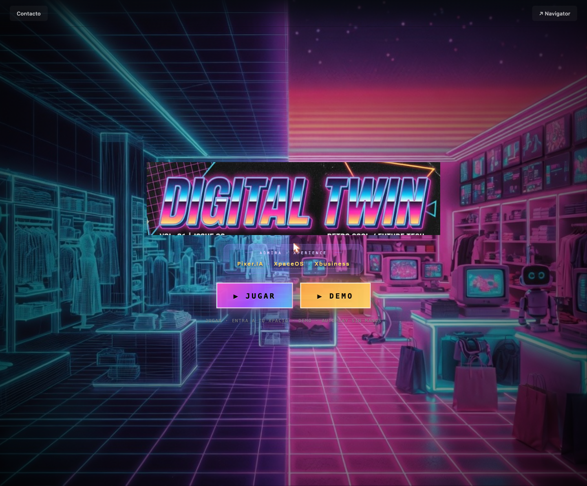
▶ JUGAR
S.ERA_SEL · NEW

Selección de era
Estado inicial del canvas. Elige el arranque del storytelling: 1. ZX Spectrum (8 bits, 1982–87) · 2. Commodore Amiga (16 bits, 1987–92) · 3. PC DX 486 (32 bits, 1992–97, en preparación). Timeline + selector de idioma (Castellano / English).
ZX Spectrum
Amiga
PC 486 · soon
era elegida
S.PRELOAD
Boot · LOAD""
Vídeo C64/Amiga retro + prompt simulado
LOAD"". Animación de carga 2-3s antes del menú.auto · 3s
S.MENU
Menú principal
ADMIRA XP · plataforma operativa multicliente. Selector de idioma + botón ABRIR XPACE CREATOR + 5 tarjetas: XP-01 Xtanco/Estancos (LIVE), XP-02 Loterías (pipeline), XP-03 Supermercado, XP-04 Stand Shoptalk EU 2026, XP-05 Xpace Creator.
▶ Abrir Xpace Creator
tarjeta cliente
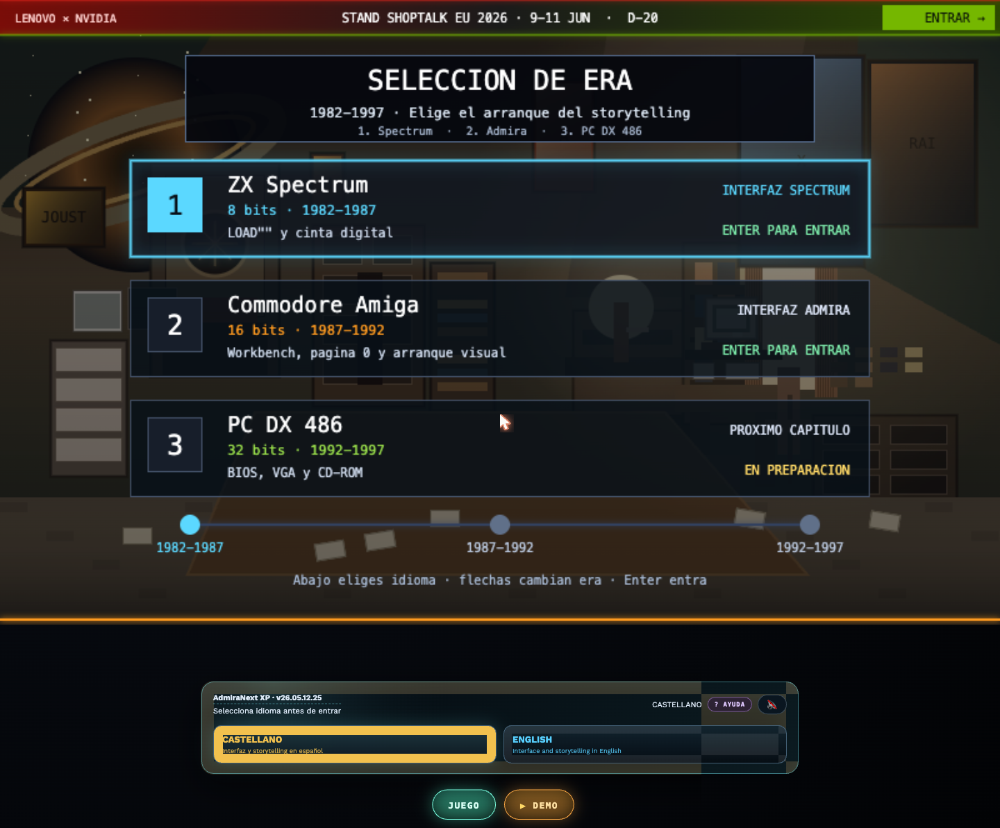
entrar a un vertical
S.INTRO · NEW
Intro storytelling
Carrusel de 8 slides navegables (← →, skip con ESC). Incluye bienvenida, EL OBJETIVO (targets por año €2.2k→€40k + calificaciones S/A/B/C/D y bonus), clientes y más. Cada slide con fade animado.
← → navegar
ESC salir
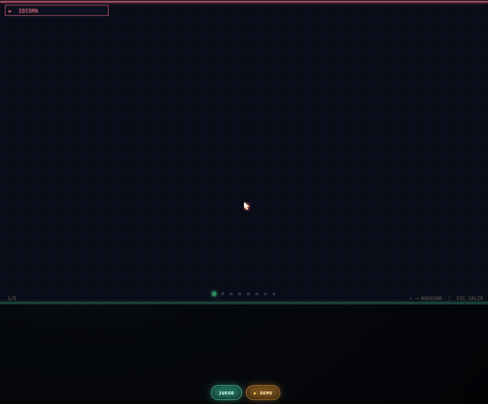
fin de slides
S.CLIENT_SEL · NEW
Selección de cliente
Mapa de verticales conectados (Xpace Creator, Stand Shoptalk EU, Admira Loterías, Admira Supermercado, Xtanco + nodos "Servicios XP" / motores compartidos). El seleccionado muestra detalle abajo + ENTRAR.
← → elegir vertical
ENTER abrir
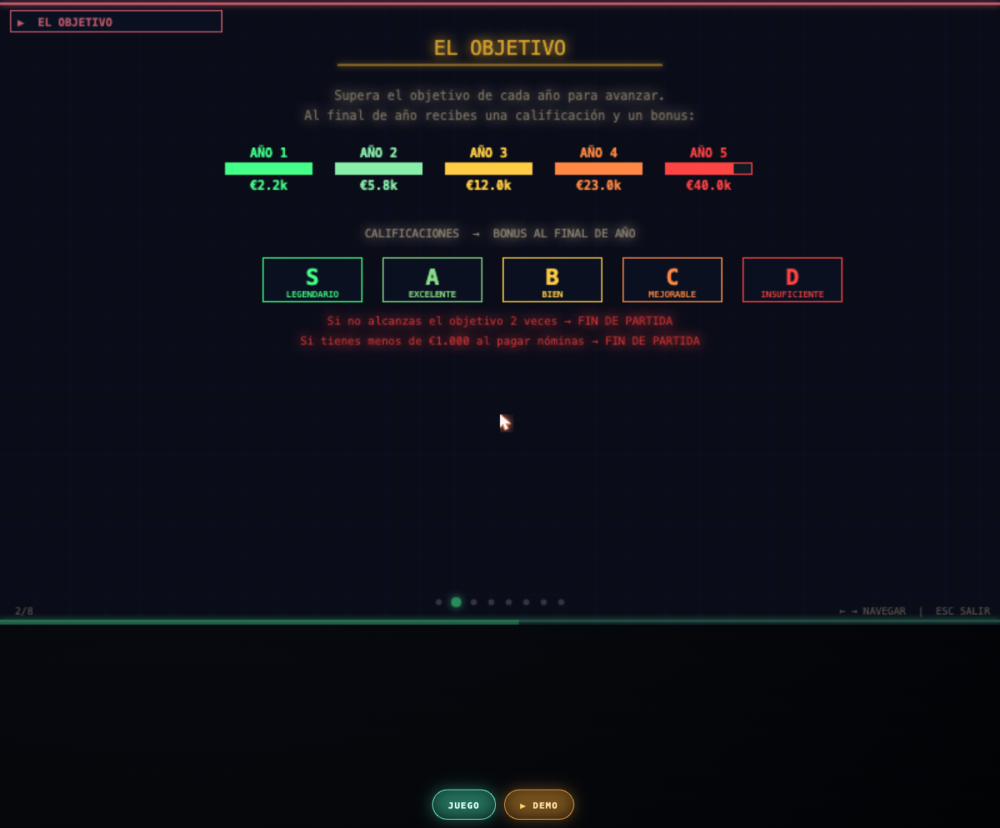
Xtanco
S.MODEL_SEL
Selección de modelo
Dentro del cliente, elige escenario: GENERIC / GOOD / BETTER / BEST. Cada uno con dificultad ★, nº de empleados, productos y caja inicial. Lleva sus FACTORY_LAYOUTS específicos. Botón ABRIR SIMULADOR.
▶ Simulador
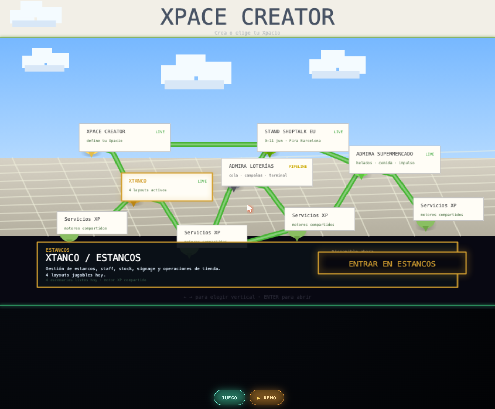
abrir simulador
S.TUT
Tutorial
"BIENVENIDO A XTANCO": gestiona tu estanco durante 5 años, alcanza el objetivo de ventas cada año, contrata personal, repón stock y fideliza clientes. Skipeable.
SIGUIENTE →
SKIP
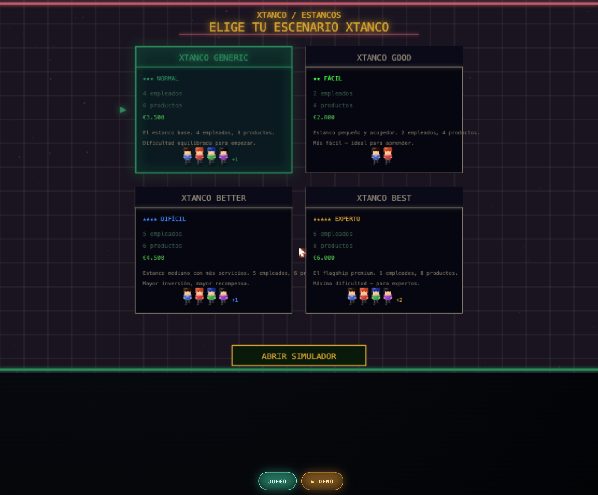
empezar partida
S.GAME
Game (gameplay)
Pantalla principal del sim. HUD top (reloj + fecha + ventas/beneficio/satisfacción + cliente). Render isométrico de la tienda. Dock inferior: CONTROL TELEGRAM/WHATSAPP + panel CLIENTES + Signage/AdmiraLive/LiveCam/Pixer.ai/Edit/Menu + Ladrón/Guardia Civil/Opinador/Unitree Bot/Sponsor.
💾 Save
⏸ Pause
⏻ Quit
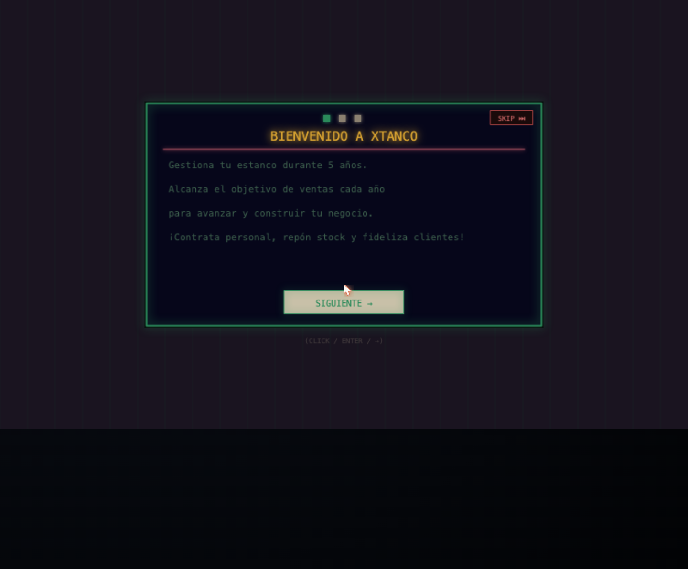
fin de año
S.YEAR_END
Fin de año
Balance anual: ingresos del año vs objetivo (barra animada), calificación S/A/B/C/D y bonus en € (positivo o negativo). Avanza al siguiente año o game over si falla el objetivo 2 veces.
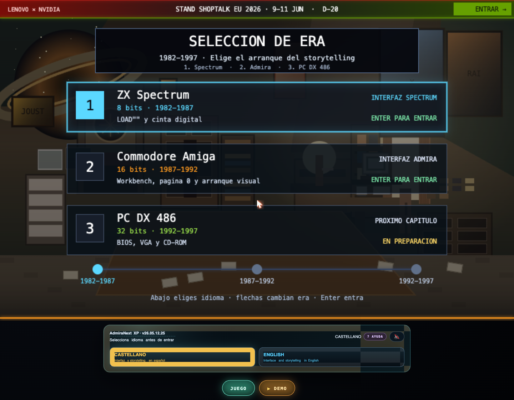
tras 5 años o quiebra
S.GAME_END
Game End
"XTANCO CERRADO · RESULTADO FINAL": años completados, ingresos totales, clientes, satisfacción, fama, puntuación total y rango ("Xtanco Legendario"…) + leaderboard. Fondo verde si ganas, rojo si quiebras.
↩ Reiniciar
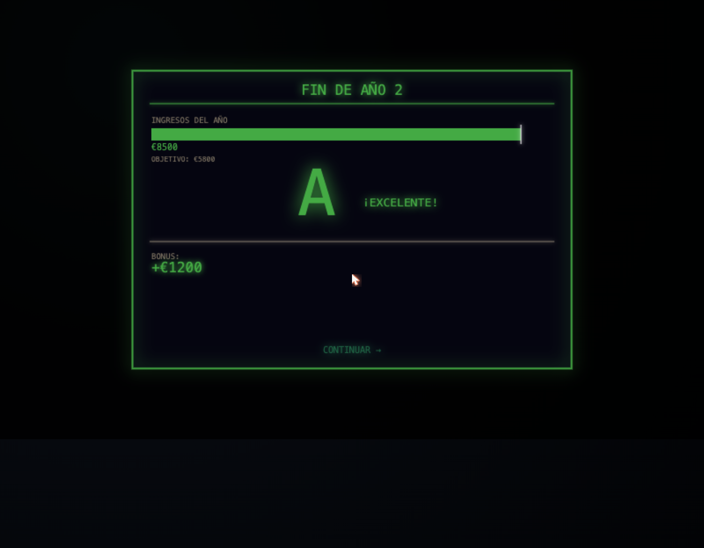
🎨 Rama Xpace Creator
URL
Entrada
Desde el botón ABRIR XPACE CREATOR del menú, o vía
?play=creator (bookmark-friendly). También creator.html que redirige.enterXpaceCreator()
MODAL
Selector de plantillas
Modal "Empezar nuevo Xpacio": ↩️ Continuar mi Xpacio, ⬜ Lienzo en blanco, plantillas custom guardadas, y 4 built-in con miniatura de preview: 🚬 Tabaquería urbana · 🏛️ Estanco premium · 📰 Kiosco de prensa · 🎪 Pop-up store.
Blank
🚬 Tabaquería
🏛️ Estanco
📰 Kiosco
🎪 Pop-up
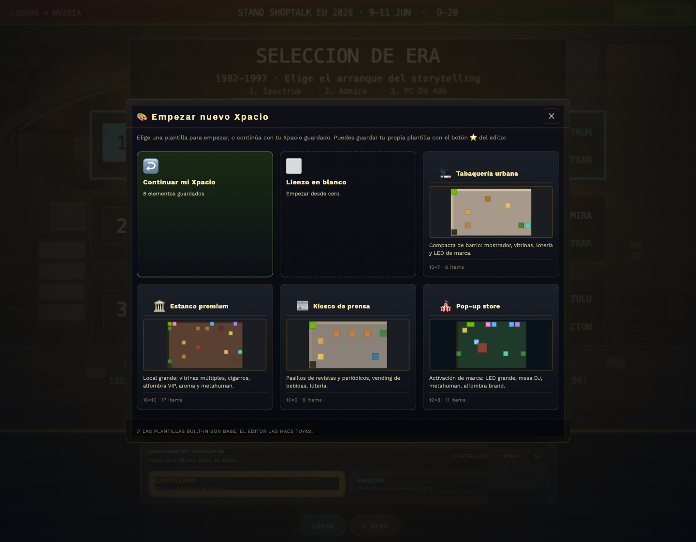
elegir plantilla
S.EDITOR
Editor del Xpacio
Canvas isométrico adaptativo. Toolbar superior (tamaño/grid/wallH, Reset, Salir). Dock derecho con paleta MOBILIARIO (Conectados / No conectados) y panel "EN EL XPACIO". Dock izquierdo CONTROL Telegram/WhatsApp.
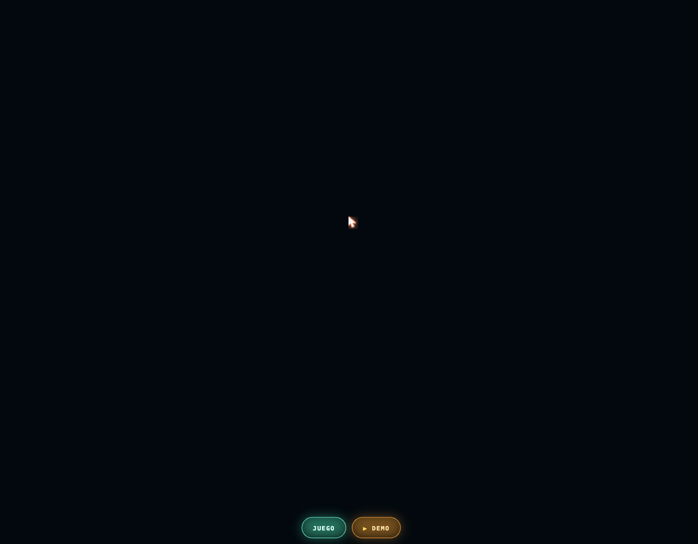
tab TRABAJADORES
PALETTE DOCK
Paleta · Trabajadores
Segunda tab de la paleta: roles (Cajero/a · Repositor/a · Azafata · Store Mgr · DJ) que se arrastran a slots del Xpacio. Panel "EN EL XPACIO" con los asignados. Guardar / ⭐ Plantilla / Reset / Salir.
💾 Guardar
⭐ Plantilla
↺ Reset
✕ Salir
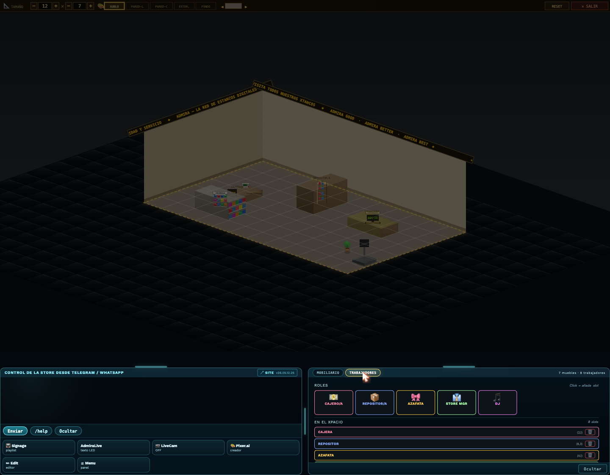
✕ Salir
EXIT
Salir → Menú
exitXpaceCreator() restaura HUD y canvas estándar. startTransition(S.MENU).